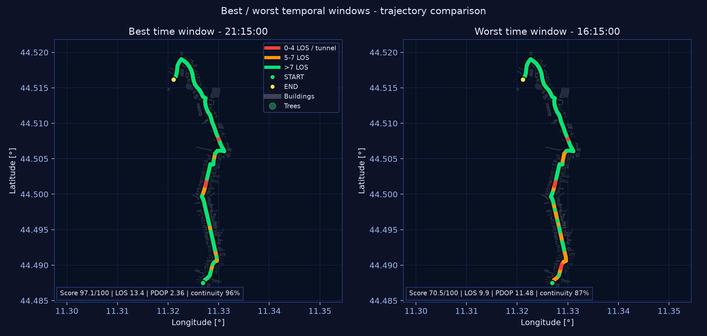
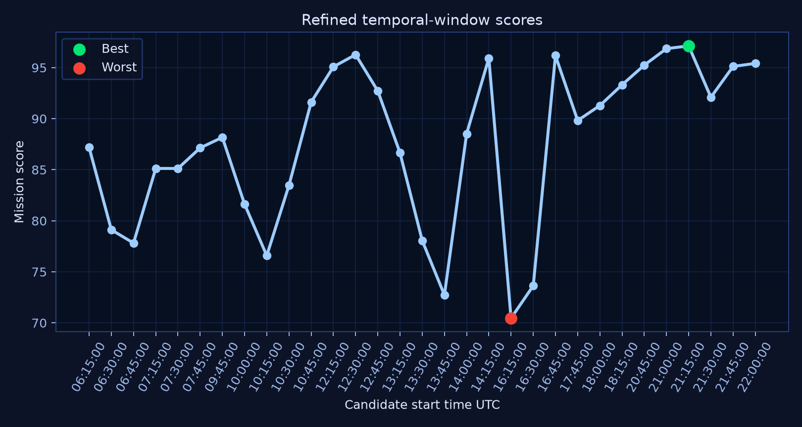
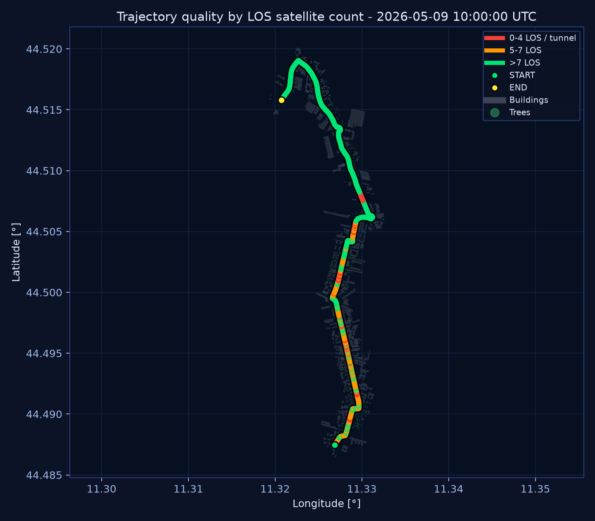
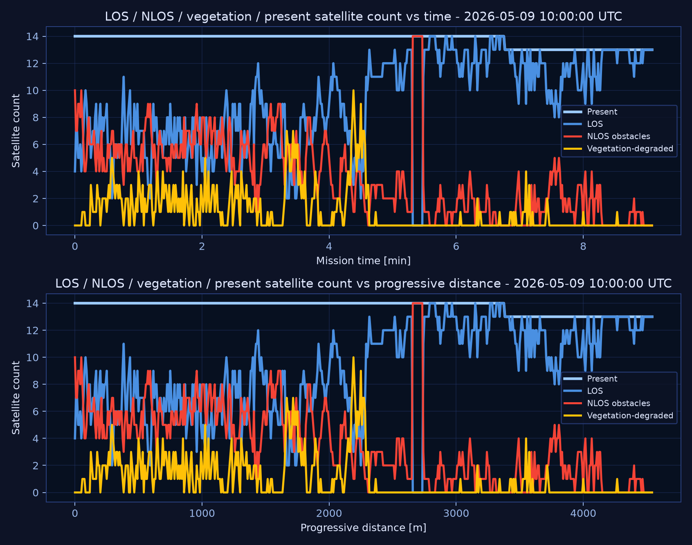
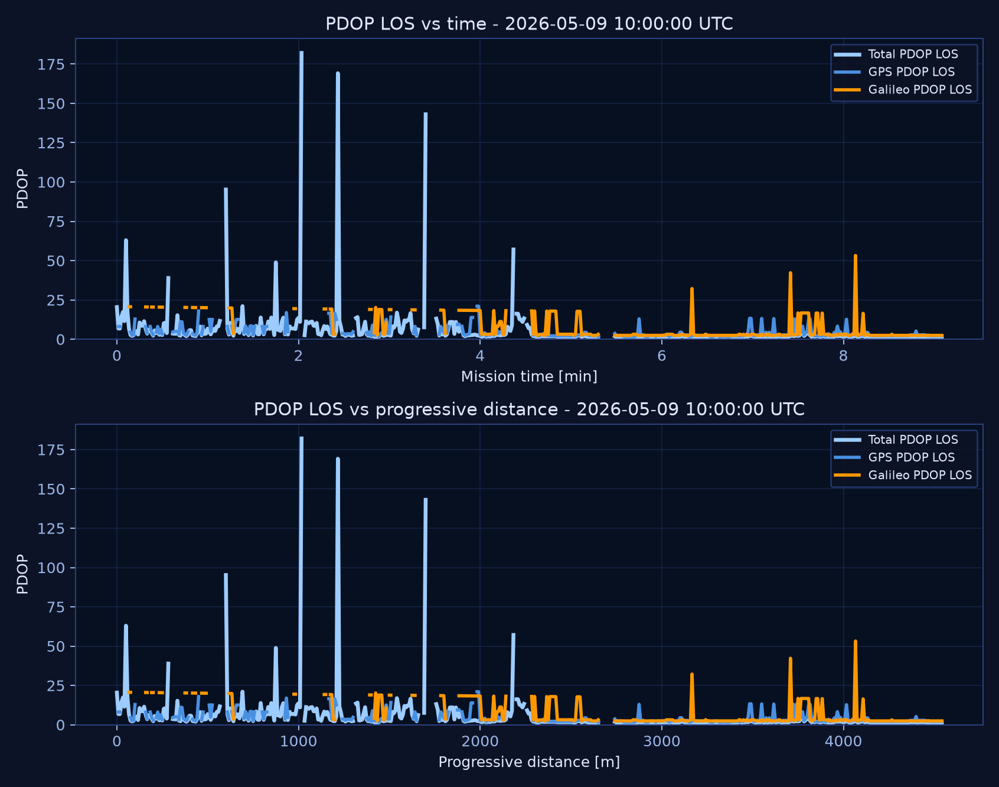
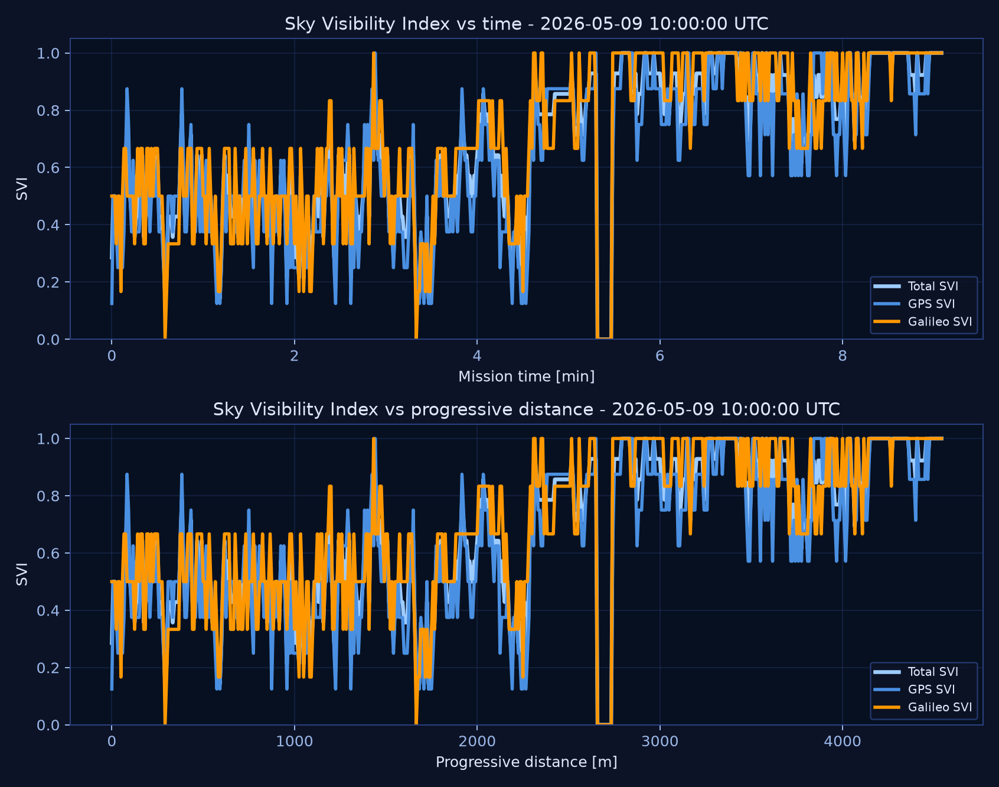
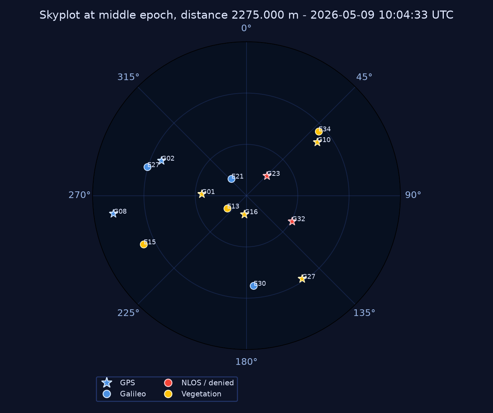

Best Window97.1/100
21:15:00
13.4avg LOS
2.36avg PDOP
96%continuity
97.1/100score
Side-by-side trajectory comparison, with LOS class coloring and transparent buildings/trees.

Refined candidate score distribution used to select final best and worst windows.

Full mission trajectory colored by LOS satellite count with planimetric urban context.

Present, LOS, NLOS and vegetation-degraded satellites vs time and progressive distance.

PDOP computed from pure LOS satellites, shown by time and progressive distance.

SVI for Total, GPS and Galileo, shown by time and progressive distance.

Selected epoch skyplot with GPS/Galileo marker distinction and status coloring.

AetherMMS Python Core metadata ============================ software: AetherMMS Python Core survey_date_utc: 2026-05-09 survey_start_time_utc: 10:00:00 survey_speed_kmh: 30.0 route_length_m: 4548.109 epochs: 546 satellite_looks: 7504 buildings_in_buffer: 1047 trees_in_buffer: 1102 tunnels_detected: 1 survey_bases: 2 base_coverage: status: green color: #00e676 max_km: 3.353544620253408 label: OK - entire trajectory within 5 km of the bases (max 3.35 km) dem_stats: route_dem_samples: 379 route_base_m: 44.194 buildings: 1047 trees: 1102 html_faithful_core: True